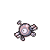
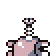
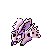
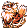
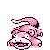
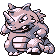

GlitchDex/RB:252
From Glitch City Wiki
Jump to navigationJump to search| O | |
| Front: Back:  | |
| Bulbapedia link | O (glitch Pokémon) |
| Equivalent glitch Pokémon | ゥ₽ 4Mn ゥ (Yellow) |
| Generation II equivalent | Wobbuffet |
| Generation II Pokémon needed for Time Capsule exploit | Unknown |
| Name bytes | CD 29 24 21 33 D7 CB 8E CD 07 50 |
| Index number (hex) | FC |
| Index number (dec) | 252 |
| Pokédex number (Family) |
081 (Magnemite hybrid) |
| Pokédex marker byte | 0x51 |
| Pokédex flag (seen) | Seen Magnemite |
| Pokédex flag (own) | Own Magnemite |
| Type(s) | Electric |
| Category | (Varies) |
| Height | (Varies) |
| Weight | (Varies) |
| Palette attribute byte | |
| Catch rate constant | 0xBE |
| Experience group | Medium-Fast Experience at Level 100: 1,000,000 Experience at Level 255: 16,581,375 |
| Experience yield | 0x59 |
| Sprite dimensions (base data) | 5x5 |
| Front sprite source pointer | 0D:5B87 |
| Back sprite source pointer | 0D:5C0D |
| Front sprite dimensions (actual) | 5x5 |
| Back sprite dimensions (actual) | 4x4 |
| ← Previous glitch Pokémon | Current glitch Pokémon | Next glitch Pokémon → |
|---|---|---|
| 'M 'N g (FB) | O (FC) | ゥ₽ 6ゥ (FD) |
O (FC) is an Electric-type glitch Pokémon in Pokémon Red and Blue.
It is a hybrid of Magnemite and uses Magnemite's sprites, due to this glitch Pokémon and Magnemite both sharing the same sprite pointers and using the same sprite bank.
ゥ₽ 4Mn ゥ is the equivalent trade glitch Pokémon in Pokémon Yellow.
It cannot be caught with the Trainer escape glitch or another means of instant encounter, as a battle with glitch Trainer "TRAINER 4 (0x34)" will be initiated instead.
There is no Generation II Pokémon that will become this glitch Pokémon in Generation I other than potentially through Celebi (Gold/Silver), Egg (Gold/Silver) and Egg (English Crystal) which convert into difficult to predict Pokémon.
Contents
Methods to obtain
- Party remaining HP glitch or storage box remaining HP glitch with a remaining HP of 252.
- CoolTrainer♀ corruption ("6" character).
- LOL glitch ("6" character)
- International fossil conversion glitch with an Attack stat of 252.
- Double distort CoolTrainer♀ corruption ("6" character)
- Equivalent trade of ゥ₽ 4Mn ゥ from Pokémon Yellow.
- Arbitrary code execution
Starting moves
- Tackle
Evolution(s)
O (FC) |
Level 5 → |
 CUBONE |
O (FC) |
Level 16 → |
 NIDORAN♂ |
O (FC) |
Level 18 → |
 ARCANINE |
O (FC) |
Level 40 → |
 SLOWPOKE |
O (FC) |
Level 56 → |
File:MissingNo. RB.png 'M (00) |
{kind=link}
O (FC) |
Level 136 → |
 RHYDON |
Pokédex data
- Arbitrary Pokédex sourced from VRAM 8180.
Level-up moves
- Transform (Level 7)
- Absorb (Level 15)
- Sleep Powder (Level 42)
- TM30 (Level 55)
- TM03 (Level 60)
- Absorb (Level 63)
- Tackle (Level 64)
- Aurora Beam (Level 71)
- TM03 (Level 121)
- Softboiled (Level 135)
- Aurora Beam (Level 140)
- Clamp (Level 141)
- TM08 (Level 194)
- Tail Whip (Level 205)
- TM13 (Level 209)
- Poison Gas (Level 224)
- Cut (Level 230)
- Glitch Move 0x00 (Level 234)
TM/HM moves
- TM06 Toxic
- TM09 Take Down
- TM10 Double-Edge
- TM20 Rage
- TM24 Thunderbolt
- TM25 Thunder
- TM30 Teleport
- TM31 Mimic
- TM32 Double Team
- TM33 Reflect
- TM34 Bide
- TM39 Swift
- TM44 Rest
- TM45 Thunder Wave
- TM50 Substitute
- HM05 Flash
Base stats
| Base stats | Level 50 stat range | Level 100 stat range |
|---|---|---|
| HP: 25 | 85-131 | 160-253 |
| Attack: 35 | 40-86 | 75-168 |
| Defense: 70 | 75-121 | 145-238 |
| Speed: 45 | 50-96 | 95-188 |
| Special: 95 | 100-146 | 195-288 |
Categories:
- Glitch Pokémon which evolve
- Pages with broken file links
- GlitchDex articles
- Pokémon Red and Blue glitch Pokémon
- Generation I glitch Pokémon
- Glitch Pokémon
- Magnemite (081) hybrid glitch Pokémon
- Glitch Pokémon unavailable with the Time Capsule exploit
- Glitch Pokémon that evolve into other glitch Pokémon
- Glitch Pokémon which learn a TM/HM glitch move
- Glitch Pokémon which learn glitch move 0x00
- Glitch Pokémon which learn a glitch move
- Arbitrary Pokédex glitch Pokémon
- Glitch Pokémon which are part of the Medium-Fast experience group
- Electric-type glitch Pokémon